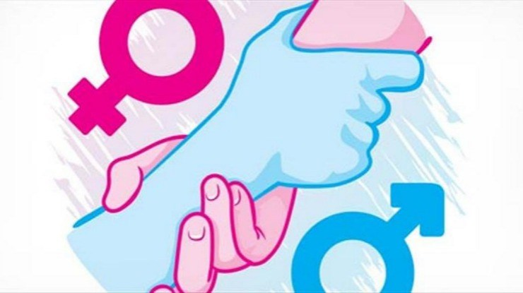
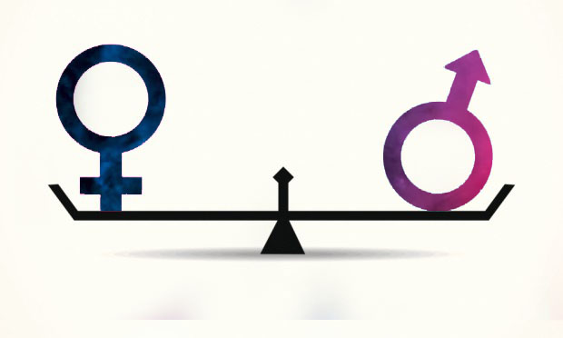

A desigualdade entre homens e muheres não é uma novidade a ser pautada entre nós. E no Brasil a situação é igual ou pior quem em outros lugares do mundo. A igualdade de gênero existe sim, porém de forma muito escassa.
É um fato que as mulheres brasileiras estudam mais, ganham menos e passam mais tempo ocupadas com tarefas domésticas do que os homens. A luta pela igualdade de gênero se intensificou em meados do século XX, impulsionada, principalmente, pelo movimento feminista. Um importante ícone neste processo é a feminista francesa Simone de Beauvoir, que marcou a consolidação de uma nova etapa do Feminismo com a publicação do livro “O Segundo Sexo”, em meados da década de 1960.
Em 2016, 21,5% das mulheres de 25 a 44 anos de idade concluíram o ensino superior contra 15,6% dos homens na mesma faixa etária, mas o rendimento delas equivalia a cerca de ¾ da renda masculina. Enquanto a média de rendimento dos homens foi de R$ 2.306, o das mulheres foi de R$ 1.764. Ou seja, em média, as mulheres recebem 76,5% do montante recebido pelos homens. Elas estudam, trabalham fora, e ainda passam cerca de 73% a mais do tempo cuidando da casa e dos filhos do que os homens. No mesmo período, também houve redução na ocupação das mulheres na indústria (-4,8%), na construção civil (-26,5%), no comércio (-1,7%) e nos serviços (-0,4%).
Por esses fatos e outros mais o movimento Feminista é super importante para o desenvolvimento de nossa sociedade. Nada não diferencia as mulheres dos homens além de um orgão genital. Apoie está causa e respeite as mulheres!
